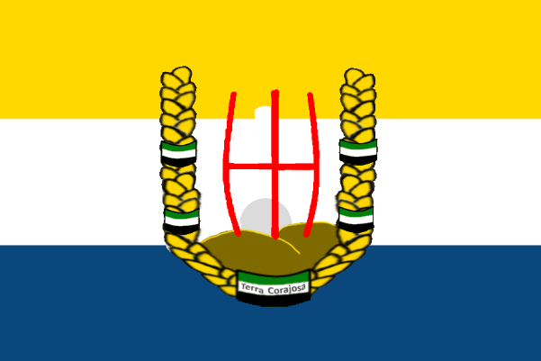

| Rozloha: | +- 14 Chunků[N] |
|---|---|
| Hlavní Město: | Neznámé[N] |
| Stavby: | Celnice Domy na prodej Dvojpatrový obchod Úřad Škola |
|---|
| Počet Obyvatel: | 1 |
|---|---|
| Jazyky: | Čeština |
| Náboženství: | Ateismus - 100%[N] |
| Státní Zřízení: | Elektivní Monarchie |
|---|---|
| Vznik: | 7. Července 2022[N] |
| Zánik: | 8. Července 2022 |
| Král: | Graphite |
| Měna: | Corajská Blita (Neimplementovaná) Rudy |
| Předcházející | Následující | Žádné |  Terra Corajosa (Loutkový Stát) |
|---|
První Republika Terra Corajosa (Oficiálně znám pouze jako Terra Corajosa) byl státní útvar existující na Třetí Sezóně FlaMaCraftu. Stát sousedil s Norte Tubaero, a vznikli někdy ve stejnou dobu. Avšak narozdíl od Norte Tubaero se Terra Corajosa rozvíjela velmi velmi pomalu a velmi málo. Jediným členem byl Graphite, jenž byl jejím Králem.
Název je silně inspirován zemí Burkina Faso, a znamená "Odvážná Země" v Portugalšině.
Po odplutí ze spawnu s Netheritem, jenž se stal budoucím prezidentem sousedícího státu Norte Tubaero, se Graphite usídlil na pláží hned vedle. První byla vybudována celnice s menším přístavem, následně osobní dům Graphita a dvojpatrový obchod, kde se nikde v historii nic neprodalo. Přibližně ten stejný den spolu čelili raidu jejiž výsledky jsou nejasné. Po postavení školy avšak Graphite začal pochybovat o budoucnosti jeho země.
Dne 8. Července 2022 došlo k tzv. "Unifikační Smlouvě", která proměnila Terra Corajosa v loutkový stát Norte Tubaero.
Vlajka Terra Corajosa měla symboliku následující:
Ve znaku je vyobrazeno slunce stoupající za písčitými kopci, uzavřeno z oblouku z obilí což byla nejpěstovanější plodina tou dobou. A na písčitých kopcích samotný symbol krále.
Terra Corajosa byl jediný stát na serveru který nevydával pouze pasy, ale taktéž Občanské Průkazy, které byly vydávany na úradě za použití Green Screenu uvnitř něj.
Terra Corajosa byl jediný[N] stát s plně sepsaným zákoníkem.